PowerShell is a powerful command-line shell and scripting language built on .NET and .Core Frameworks depending on the version. Designed for system administrators and power users, it automates repetitive tasks, manages system configurations, and interacts with APIs, registry, and file systems. It is object-based (unlike traditional text-based shells), meaning it passes objects between commands (not just raw text), which gives it unique flexibility.
Getting Started with PowerShell
- .NET and .Core Frameworks
- PowerShell versions (Windows PowerShell vs PowerShell Core)
- Cmdlets & Basic Syntax and Structure
- Working with Files and Directories
- PowerShell Scripting Basics
- Real World Cases
.NET and .Core Frameworks
.NET Framework
The .NET Framework is the core powerhouse behind PowerShell's intelligence. It's not just a programming platform - it's the engine that gives PowerShell its ability to work with complex data, interact with the Windows operating system, and control almost every part of your system with precision. When you run a cmdlet like Get-Process or manipulate objects with Select-Object, you're tapping directly into the .NET 's rich library of pre-built classes and methods.
In simple terms, the .NET Framework provides PowerShell with:
- Access to powerful libraries that can read files, query networks, and manage Windows services
- A runtime environment (CLR) that handles memory, execution, and error handling.
- The ability to treat data as objects, not plain text - allowing advanced filtering, formatting, and manipulation.
PowerShell isn't just a shell - it's a scripting language deeply rooted in the .NET ecosystem, which is why it can do far more than traditional shells. Every command you run inherits the depth and structure of .NET, turning simle commands into powerful, scalable automation scripts.
.Core Framework
The .NET Core Framework is the modern, cross-platform foundation behind PowerShell Core's flexibility and reach.
Unlike the tradtional .NET Framework, which is Windows-specific, the .NET Core is designed more for portability, allowing PowerShell Core to be cross-platform (Windows, Linux, macOS). It's modular, lightweight, and fast. It's built to meet the demands of modern automation.
The .NET Core Framework provides PowerShell Core with:
- Cross-platform compatibility: Enables consistent scripting and automation across Windows, macOS, and Linux environments.
- Performance and modularity: Through a streamlined runtime and lightweight libraries that support efficient execution and scalable scripts.
- Open-source development: Giving users access to the latest features, community contributions, and rapid improvements in the PowerShell ecosystem.
PowerShell Core is a foward-looking scripting solution that is built on the .NET Core foundation. Often used for diverse tasks such as managing servers, deploying containers, or scripting across different platforms, PowerShell Core with .NET Core brings the power of .NET to modern automation.
Windows PowerShell and PowerShell Core
The differences between Windows PowerShell and PowerShell Core lie within platform support, runtime, and development direction.
Platform and Version
Windows PowerShell
Features:
- Version: 5.1 (latest and final)
- Platform: Windows-only
- Runtime Environment: .NET Framework
- Compatibility: Works with older Windows APIs
PowerShell Core
Features:
- Version: 6.x and 7.x (latest PowerShell 7)
- Platform: Cross-platform (Windows, macOS, Linux)
- Runtime Environment: .NET Core / .NET 5+
- Compatibility: Faster, modular, but lacks some Windows-only features
Cmdlets & Basic Syntax and structure
Cmdlet = Command + Let (lightweight commands)
Cmdlets are the precision tools of PowerShell - small but powerful commands that do one job and do it well. Cmdlets can be thought of as individual building blocks in a high performance automation toolkit. Written in the .NET Framework and designed specifically for administrative tasks, each cmdlet follows a clear Verb-Noun format, making it easy to guess and intuitive to learn. Unlike traditional shell commands that output plain text, cmdlets output structured objects, allowing you to filter, sort, and manipulate data with accuracy. Whether you're pulling system info, managing users, or stopping rogue services, cmdlets are your go-to tools for scripting control and operational mastery.
Naming Format
Cmdlets use a Verb-Noun naming pattern for clarity and consistency:
| Verb | Noun | Meaning |
|---|---|---|
| Get- | Help | Displays help info about cmdlets |
| Get- | Command | Lists available cmdlets |
| Get- | Process | Show running processes |
| Get- | Service | Show running services |
| Start- | Service | Start a specific service |
| Restart- | Service | Restart a specific service |
| Stop- | Service | Stop a specific service |


Exploration
$PSVersion
Get-Module -ListAvailable
Get-Command -Module ModuleName
List Command -Module ModuleName
Get-FileHash
Get-FileHash -Algorithm SHA1 path
NetAdapter
Select-Object
NetAdapter | Select-Object Name, Status, LinkSpeed
Set-NetFirewallRule -DisplayGroup "File and Printer Sharing" -Enable True
Get-NetFirewall -DisplayGroup "Network Discovery"
Get-WmiObject -query 'select*from SoftwareLicensingService').OA3xOriginalProductKey
wmic bios get serialnumber
New-NetFirewallRule -DisplayName "Block Specific IP" -Direction Inbound -Action Block -RemoteAddress "192.168.1.100" -Protocol Any
New-NetFirewallRule -DisplayName "Block Specific IP Outbound" -Direction Outbound -Action Block -RemoteAddress "192.168.1.100" -Protocol Any
Get-ComputerInfo | Select-Object WindowsProductName, WindowsVersion
net user username /passworddchg:no
net user username /passworddchg:yes
net users
net groups
net user administrator
Get-LocalGroupMember -Group "Administrators"
Remove-LocalGroupMember -Group "Administrators" -Member "Domain Users"
Get-Module -ListAvailable
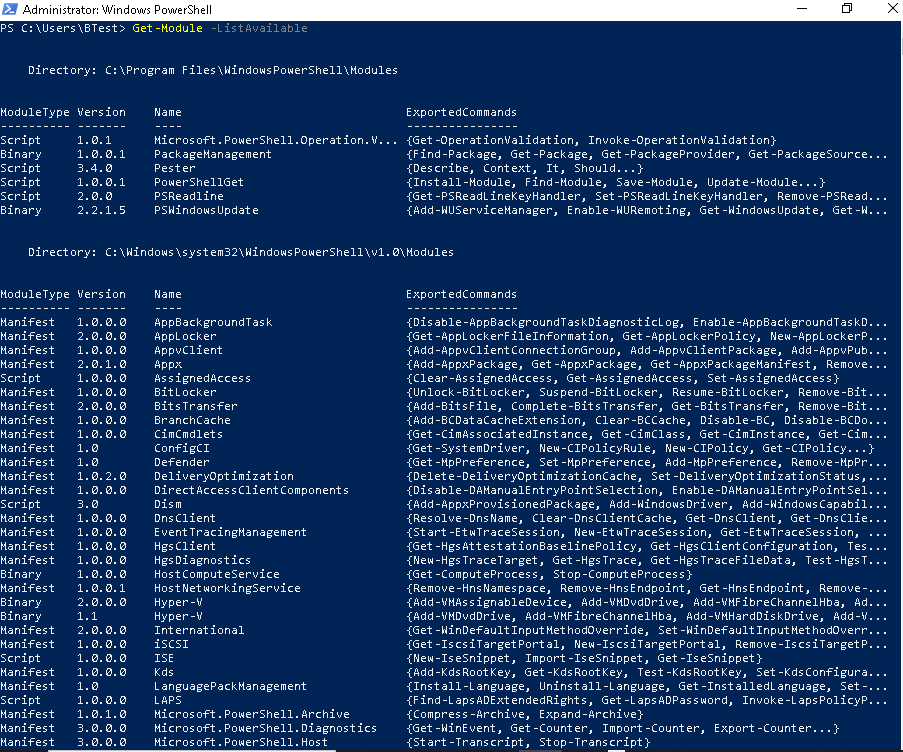 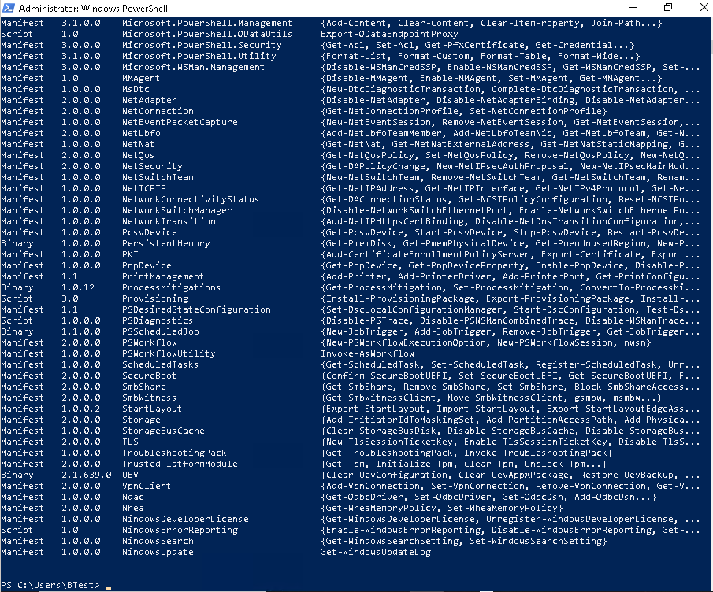Get-Module -ListAvailable NetSecurity
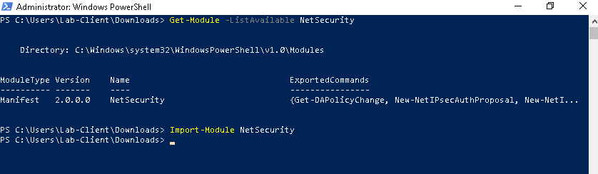Get-Command -Module WindowsUpdate
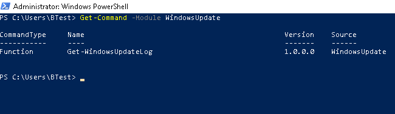Get-Command -Module NetAdapter
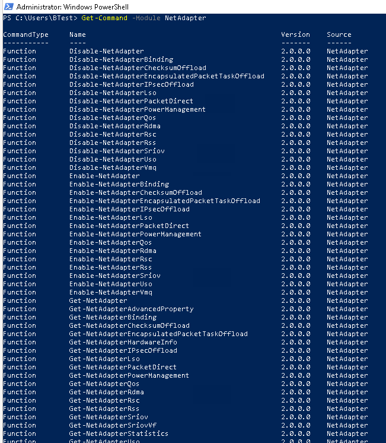Get-Command -Module NetTCPIP
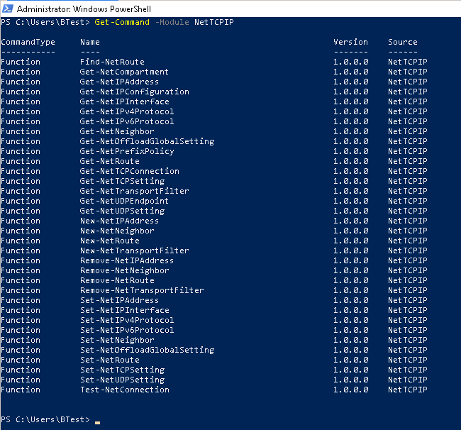Get-Command -Module TroubleshootingPack
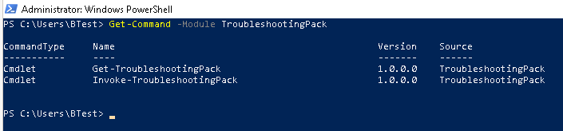Get-Command -Module NetworkConnectivityStatus
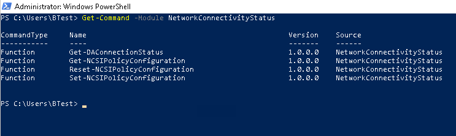Get-Command -Module NetSecurity
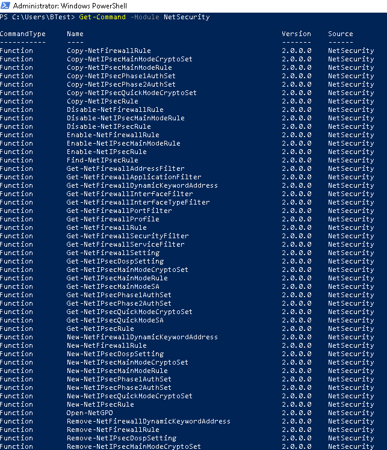Get-FileHash
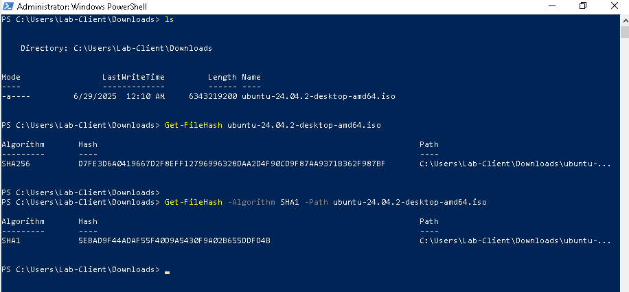NetAdapter
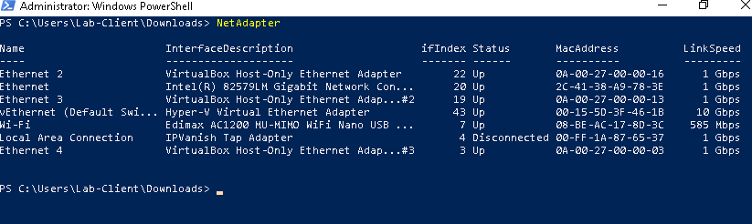NetAdapter | Select-Object Name, Status, LinkSpeed
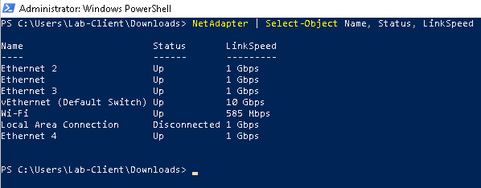Set-NetFirewallRule -DisplayGroup "File and Printer Sharing" -Enable True
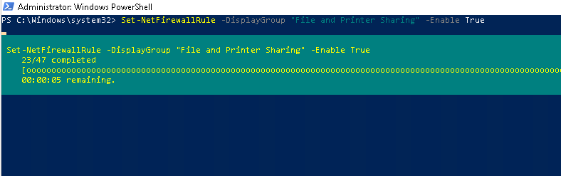Get-NetFirewallRule -DisplayGroup "Network Discovery"
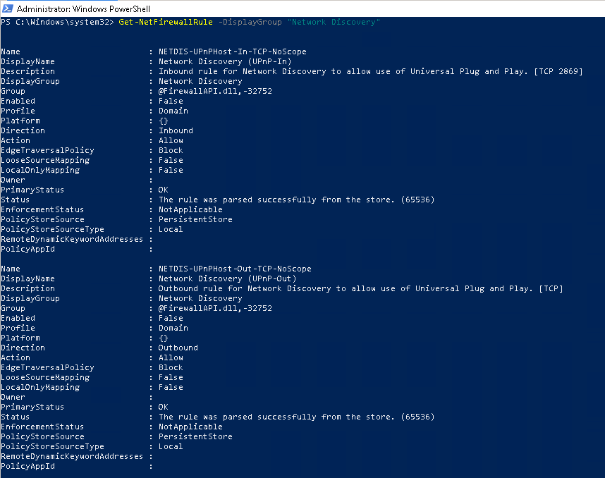Retrieve computer serial number

New-NetFirewallRule -DisplayName "Block Specific IP" -Direction Inbound -Action Block -RemoteAddress "192.168.1.100" -Protocol Any
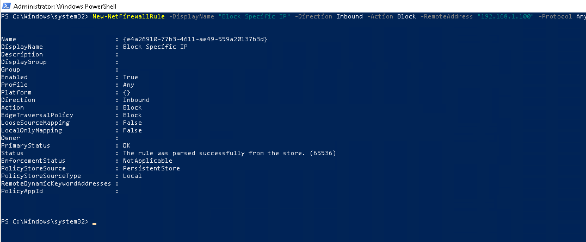
New-NetFirewallRule -DisplayName "Block Specific IP" -Direction Outbound -Action Block -RemoteAddress "192.168.1.100" -Protocol Any
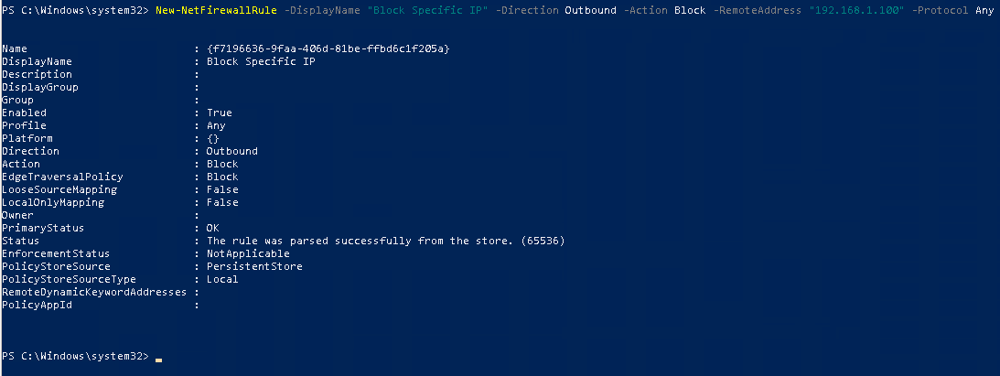Get-ComputerInfo
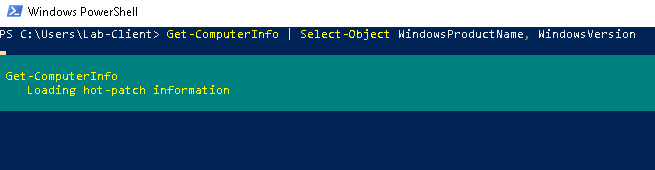Get-ComputerInfo | Select-Object WindowsProductName, WindowsVersion
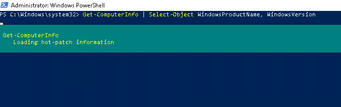 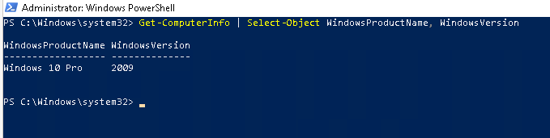net users

net groups

net user administrator

Get-LocalGroupMember -Group "Administrators"
Get-ChildItem
New-Item
Get-ChildItem
Remove-Item
echo
mkdir
Move-Item
Copy-Item
ls


PowerShell Scripting Basics
The following outlines PowerShell Scripting Basics that introduce the core building blocks of automation and system administration with the use of Microsoft's powerful command-line shell and scripting language.
Data Types:
- variable: Variables are named storage locations used to store data that a script can reference, modify, or pass to commands.
- string: Strings represent sequence of characters in the form of text.
- int: int - integer is used to represent whole numbers that are both positive and negative.
- array: A collection of values in a single variable. It allows you to store multiple items, such as strings, numbers, as well as objects, in an ordered list.
- boolean: Booleans are used to represent truth values and are most commonly used in conditional logic, such as if statements and comparisons.
- object: An object is a structured unit of data that contains properties and methods.
Variables
$Name = "Dave"
$Age = 29
$Services = Get-Service
Variables start with $

Strings
$greeting = "Hello, world"
$path = 'C:\Users\Dave'
Integers
$a = 10
$b = 5
Arrays
# Creating an array of strings
$colors = @("Red", "Green", "Blue")
# Accessing elements by index
Write-Output $colors[0] # Output: Red
Write-Output $colors[1] # Output: Green
Write-Output $colors[2] # Output: Blue
Adding Items to an Array:
$colors += "Yellow" # Adds a new item
Write-Output $colors # Output: Red Green Blue Yellow
Looping Through an Array:
foreach ($color in $colors) {
Write-Output "Color: $color:
}
Booleans
$isLoggedIn = $true
$isAdmin = $false
Using Boolean in if statements:
if ($isLoggedIn) {
Write-Output "Access granted."
} else {
Write-Output "Access denied."
}
Boolean Result from a Comparison:
$a = 10
$b = 5
$isGreater = $a -gt $b # true
Write-Output $isGreater # Output: True
Logical Operators:
$hasPermission = $true
$isOwner = $false
if ($hasPermission -and $isOwner) {
"You can delete this file."
} elseif ($hasPermissions -or $isOwner) {
"You can view the file."
} else {
"Access denied."
}
Using -not to Flip a Boolean:
$isAvailable = $false
if (-not $isAvailable) {
"Resource is not available."
}
Loops and Conditional Statements
# If-Else
if ($Age -gt 18) {
Write-Output "Adult"
} else {
Write-Output "Minor"
}
# ForEach Loop
$services = Get-Service
foreach ($service in $services) {
Write-Output $service.DisplayName
}

Objects
$process = Get-Process notepad
The variable $process is now an object with properties such as Name, Id, CPU, etc.
You can access those properties like this:
$process.Name # Output: Notepad
$process.Id # Output: (the process ID)
$process | Get-Member
$user = [PSCustomObject]@{
FirstName = "Mark"
LastName = "Thompson"
Age = 00
}
$user.FirstName # Output: Mark
$user.Age # Output: 00
Array of Objects:
$users = @(
[PSCustomObject]@{ Name = "Alice"; Role = "Admin" },
[PSCustomObject]@{ Name = "Bob"; Role = "User" }
)
foreach ($u in $users) {
Write-Output "$(Su.Name) is a $($u.Role)"
}
Object Filtering:
$service = Get-Service
$running = $services | Where-Object { $_.Status -eq "Running" }
Functions
function Greet-User {
param ($Name)
Write-Output "Welcome, $Name!"
}
Greet-User -Name "Dave"

simple Function (No Parameters)
function Say-Hello {
Write-Output "Hello, world!"
}
# Call the function
Say-Hello
Function with One Parameter
function Greet-User {
param($name)
Write-Output "Hello, $name!"
}
Greet-User -name "Mark"
Function with Multiple Parameters
function Add-Numnbers {
param($a, $b)
$sum = $a + $b
Write-Output "The sum is $sum"
}
Add-Numbers -a 5 -b 10 # Output: The sum is 15
Function with Conditional Logic
function Check-Age {
param($age)
if ($age -ge 18) {
"You're an adult."
} else {
"You're a minor."
}
}
Check-Age -age 20
Function that Returns a Value
function Multiply {
param($x, $y)
return $x * $y
}
$result = Multiply -x 4 -y 6
Write-Output "Result: $result"
Create reusable code blocks
Scripts end with the .ps1 extension.ps1
Permissions and Execution Policy
Get-ExecutionPolicy
Set-ExecutionPolicy RemoteSigned

Policies:
- Restricted
- AllSigned
- RemoteSigned
- Unrestricted
Might need admin privileges
Useful Tools and Debugging
Write-HostvsWrite-OutputStart-Transcriptto log sessionsTry / Catch / Finallyfor error handling
Write-Host:
Write-Host is used to display output directly output directly to the console.
function Test-ConnectionStatus {
param($server)
Write-Host "Starting connection check..." -ForegroundColor Cyan
if (Test-Connection -ComputerName $server -Count 1 -Quiet) {
Write-Host "$server is online." -ForegroundColor Green
} else {
Write-Host "$server is offline or unreachable." -ForegroundColor Red
}
Write-Host "Finished connection check." -ForegroundColor Cyan
}
Test-ConnectionStatus -server "example.com"
Write-Output:
Write-Output sends data to the output stream, which makes it available for further use such as capturing into a variable, piping to another command, and redirecting a file.
try {
Get-Item "C:\fakefile.txt"
} catch {
Write-Output "File not found!"
}

Start-Transcript:
Start-Transcript is a built-in command that starts recording everything that happens in the PowerShell session, including the commands run, their output, errors, and messages to a log file.
# Start logging the session
Start-Transcript -Path "C:\Logs\debug-log.txt" -Append
Write-Host "Starting server check..."
$server = "example.com"
Write-Host "Pinging $server..."
if (Test-Connection -ComputerName $server -Count 1 -Quiet) {
Write-Host "$server is online."
} else {
Write-Host "$server is offline or unreachable."
}
Write-Host "Script complete."
# Stop logging
Stop-Transcript
Try/Catch - Basic Try/Catch Block:
try {
# This will fail if the file doesn't exist
Get-Content "C:\missing-file.txt"
}
catch {
Write-Host "An error occurred: $_"
}
Try/Catch with a Specific Error Action
try {
# Force PowerShell to treat the error as terminating
Remove-Item "C:\nonexistent.txt" -ErrorAction Stop
}
catch {
Write-Host "Failed to delete file: $_"
}
Finally:
Using Finaly to Always Run Cleanup
try {
Write-Host "Trying risky operation..."
Get-Content "C:\nonexistent.txt" -ErrorAction stop
}
catch {
Write-Host "Caught an error: $_"
}
finally {
Write-Host "Cleaning up... This always runs."
}
- Use try/catch to gracefully handle errors.
- Use finally for cleanup tasks that must run regardless
- Add -ErrorAction Stop to make sure non-terminating errors are caught
Real-World Use Cases
- Batch user creation in AD
- Automating updates
- Backing up and archiving logs
- Scheduled tasks and reporting
Automating updates
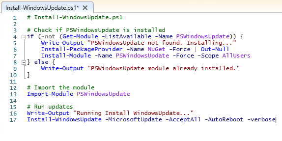 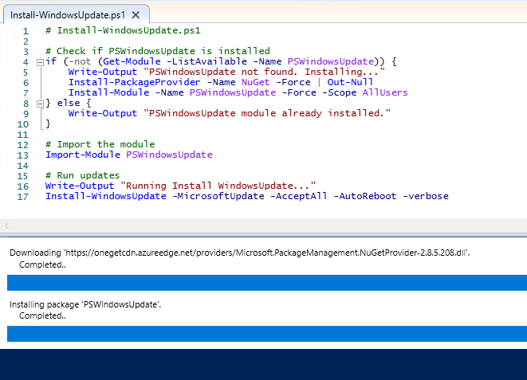 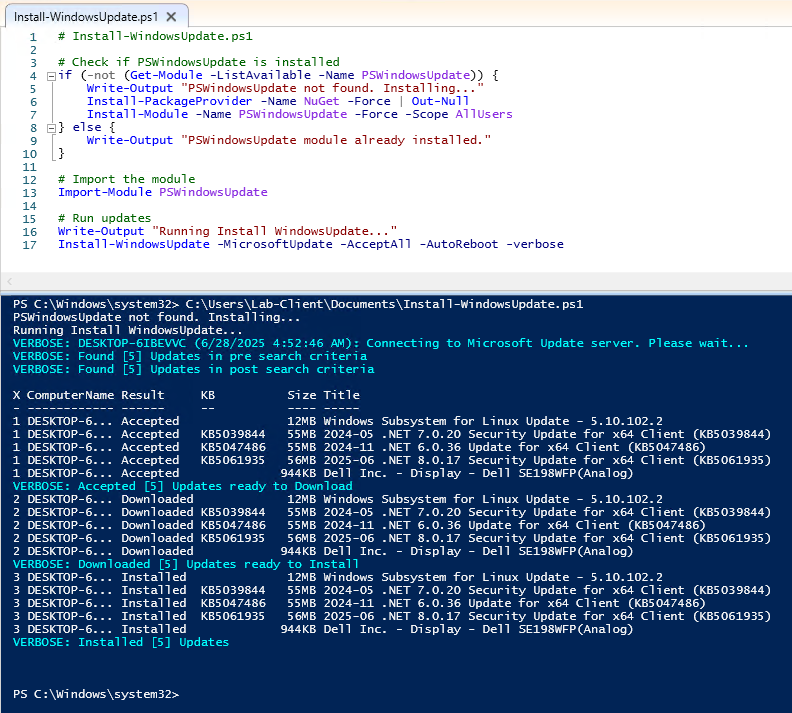Conclusion
PowerShell gives IT professionals control and automation in ways that save time, reduce errors, and increase system reliability. Mastering its fundamentals is the first step to becoming a true IT automation pro.
Back to Home